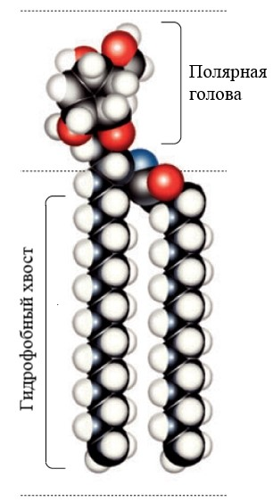
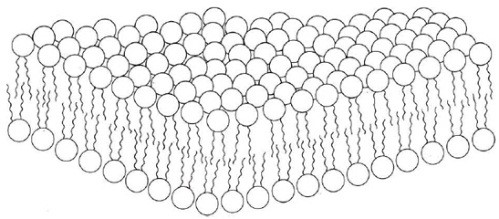
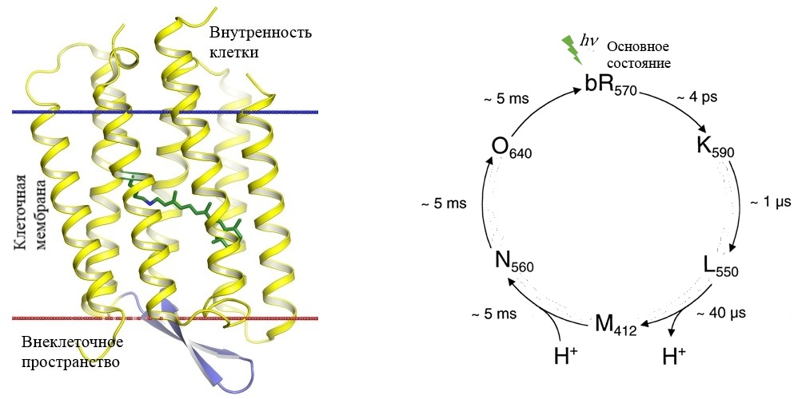
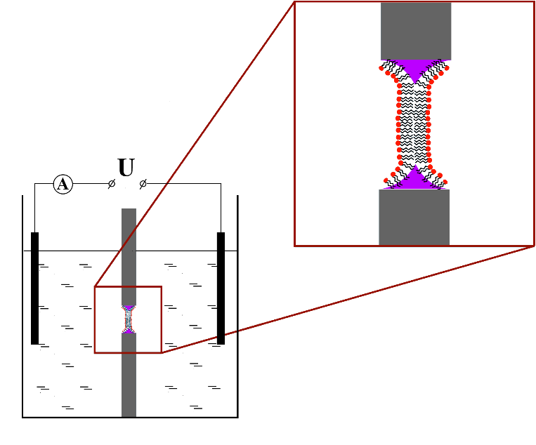
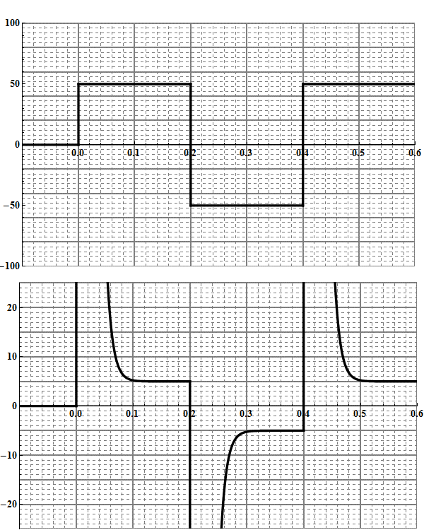
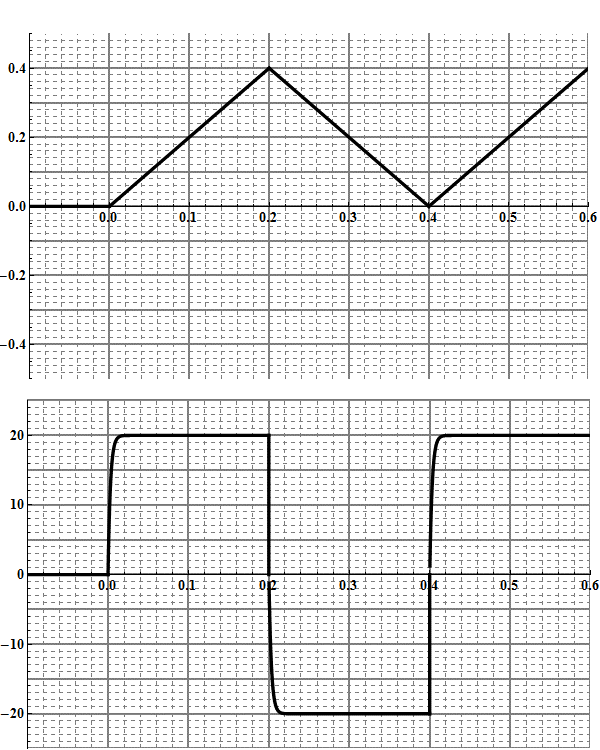
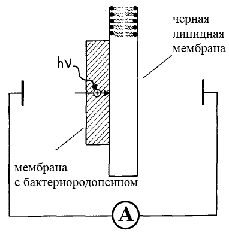
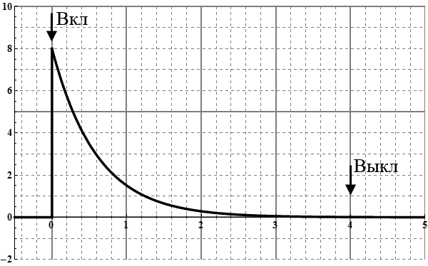
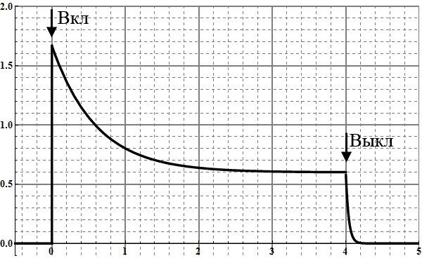
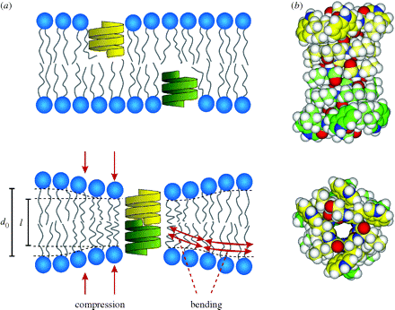

X16 (2016) — English translation
In this task we will touch upon the issues of studying photoactive membrane proteins. These studies took place at the dawn of biophysics, in the 1970s and 80s. Wherever in this problem you need to make numerical estimates, you can use the data from the graphs and diagrams given in the condition, as well as the results of calculations from the previous paragraphs of the problem. First, let's consider a model of a cell membrane - a lipid bilayer. The lipid molecule consists of a polar head and hydrophobic tails (fatty acid residues) (Fig. 1). If you try to dissolve lipid molecules in water (a polar solvent), they can form various structures that minimize the energy of the system. Those. The polar heads of the molecules tend to form contacts with water, and the hydrophobic tails tend to hide from water. Fig.1. Lipid molecule
In this task we will touch upon the issues of studying photoactive membrane proteins. These studies took place at the dawn of biophysics, in the 1970s and 80s. Wherever in this problem you need to make numerical estimates, you can use the data from the graphs and diagrams given in the condition, as well as the results of calculations from the previous paragraphs of the problem. First, let's consider a model of a cell membrane - a lipid bilayer. The lipid molecule consists of a polar head and hydrophobic tails (fatty acid residues) (Fig. 1). If you try to dissolve lipid molecules in water (a polar solvent), they can form various structures that minimize the energy of the system. Those. The polar heads of the molecules tend to form contacts with water, and the hydrophobic tails tend to hide from water.
Fig.1. Lipid molecule

The lipid bilayer is a thin polar membrane consisting of two layers of lipid (Figure 2). This bilayer, which makes up the cell membrane, allows various ions, proteins and other molecules to be retained in the cell. Fig.2. Lipid bilayer
The lipid bilayer is a thin polar membrane consisting of two layers of lipid (Figure 2). This bilayer, which makes up the cell membrane, allows various ions, proteins and other molecules to be retained in the cell.
Fig.2. Lipid bilayer

For a living cell to exist, it must somehow produce energy within itself. For example, a cell can absorb sugar molecules, break them down and, using molecular mechanisms, store energy in the form of ATP (Adenosine triphosphate is a universal source of energy for all biochemical processes occurring in living systems. ATP is the main carrier of energy in the cell.). But what to do if nutrition with sugars is not available? In a study of bacteria living in extremely saline bodies of water (20% salt), a membrane protein, bacteriorhodopsin, was discovered (Fig. 3).
Rice. 3. Bacteriorhodopsin molecule. Rice. 4. Bacteriorhodopsin photocycle

Bacteriorhodopsin turned out to be a photoactive proton pump. When a protein absorbs a photon, it transfers one proton from inside the cell to the outside. With the constant work of the protein on the cell membrane, an additional potential difference is created, which the bacterium can convert into energy and store it in the form of ATP for its needs. If these bacteria are mechanically destroyed, then flat pieces of membranes containing large quantities of bacteriorhodopsin can be isolated. This is seen as an alternative to solar panels powered by semiconductor elements. Bacteriorhodopsin, having absorbed a photon, passes through a number of intermediate states (performs a photocycle, Fig. 4). First, it throws out the proton $\rm H^+$ (L - state), which is inside the protein, and then it is replaced by the proton $\rm H^+$ from inside the cell (M - state). And until the protein returns to the ground state, it cannot absorb a new photon. The diagram shows the intermediate states in letters, as well as the characteristic transition times between them.
Various model membranes are used to functionally study various protein ion pumps. The black lipid membrane (BLM) is one such model system (Figure 5). The experimental setup consists of two separate tanks with a highly conductive solution. A small hole with an area of $S_m=1~\text{мм}^2$ is made between the tanks. A lipid bilayer is placed over this hole. Electrodes are placed in both reservoirs, which are connected to each other through an ammeter and, in some cases, a source. A lipid membrane has electrical characteristics: capacitance $C_m$ and conductivity $G_m(=1/R_m)$, where $R_m$ is the membrane resistance. It's up to you to identify them. If the source supplies a periodic rectangular signal, then the ammeter registers a damped signal (Fig. 6). If another source supplies a periodic signal of a triangular shape, then the ammeter registers an almost rectangular signal (Fig. 7). The ammeter can be considered ideal. Rice. 5. Diagram of a setup containing a black lipid membrane
Various model membranes are used to functionally study various protein ion pumps. The black lipid membrane (BLM) is one such model system (Figure 5). The experimental setup consists of two separate tanks with a highly conductive solution. A small hole with an area of $S_m=1~\text{мм}^2$ is made between the tanks. A lipid bilayer is placed over this hole. Electrodes are placed in both reservoirs, which are connected to each other through an ammeter and, in some cases, a source. A lipid membrane has electrical characteristics: capacitance $C_m$ and conductivity $G_m(=1/R_m)$, where $R_m$ is the membrane resistance. It's up to you to identify them. If the source supplies a periodic rectangular signal, then the ammeter registers a damped signal (Fig. 6). If another source supplies a periodic signal of a triangular shape, then the ammeter registers an almost rectangular signal (Fig. 7). The ammeter can be considered ideal.

Rice. 6. Square wave $U$ and ammeter signal $I$

Rice. 7. Triangle signal $U$ and ammeter signal $I$

To quantitatively characterize proton pumping by the protein, membranes containing bacteriorhodopsin are attached to a black lipid membrane (Figure 8). Membranes with protein can attach to the black membrane in any direction, i.e. Probably half of the membranes would pump protons towards the black membrane, and the other half away from the membrane. Thus, we would not be able to see any effect of the protein creating a current. To prevent this from happening, charged molecules are added to the lipids of the black membrane, which force the part of the membrane with the protein to orient itself in a preferential manner. In further calculations, assume that membranes with bacteriorhodopsin are attached to the entire surface of the black membrane (on one side). Rice. 8. Installation diagram, where membranes with protein are attached to a black membrane
To quantitatively characterize proton pumping by the protein, membranes containing bacteriorhodopsin are attached to a black lipid membrane (Figure 8). Membranes with protein can attach to the black membrane in any direction, i.e. Probably half of the membranes would pump protons towards the black membrane, and the other half away from the membrane. Thus, we would not be able to see any effect of the protein creating a current. To prevent this from happening, charged molecules are added to the lipids of the black membrane, which force the part of the membrane with the protein to orient itself in a preferential manner. In further calculations, assume that membranes with bacteriorhodopsin are attached to the entire surface of the black membrane (on one side).

In the direct experiment described above, the measured time dependence of the photocurrent turned out to be as shown in Fig. 9. The figure shows the times when the light is turned on and off. Analyzing Fig. 9, you must use the result of item $\mathrm C2$. If we conduct an experiment similar to part B of this problem, then the ratio of the capacities of the membranes with bacteriorhodopsin and the solid membranes used to prepare the black membrane will be $C_p/C_m\approx{5}$ Fig. 9. Dependence of the current flowing through the ammeter on time
In the direct experiment described above, the measured time dependence of the photocurrent turned out to be as shown in Fig. 9. The figure shows the times when the light is turned on and off. Analyzing Fig. 9, you must use the result of item $\mathrm C2$. If we conduct an experiment similar to part B of this problem, then the ratio of the capacities of membranes with bacteriorhodopsin and solid membranes used to prepare the black membrane will be $C_p/C_m\approx{5}$

To study the saturability of the current generated by the proteins, the time dependence of the photocurrent was measured with varying intensity of the incident light. At low intensities, we can assume that the current created by the proteins $I_p$ is proportional to the intensity of the incident light.
Rice. 10. Dependence of the current flowing through the ammeter on time with varying intensity of incident light

It turns out that the conductivity of the black membrane can be changed using, for example, a bactericidal antibiotic, gramicidin $A$. When these molecules enter the membrane, they form a pore in the membrane (Figure 11) through which sodium and potassium ions, as well as protons, can pass. Adding these molecules to the membrane increased its conductivity to $G^{GR}_m=10^{-8}~\text{Ом}^{-1}$ Fig. 11. Model of the gramicidin A molecule
It turns out that the conductivity of the black membrane can be changed using, for example, a bactericidal antibiotic, gramicidin $A$. When these molecules enter the membrane, they form a pore in the membrane (Figure 11) through which sodium and potassium ions, as well as protons, can pass. Adding these molecules to the membrane increased its conductivity to $G^{GR}_m=10^{-8}~\text{Ом}^{-1}$

Source: https://pho.rs/p/299